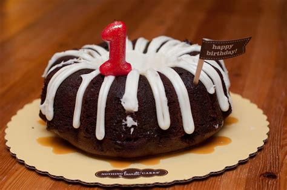
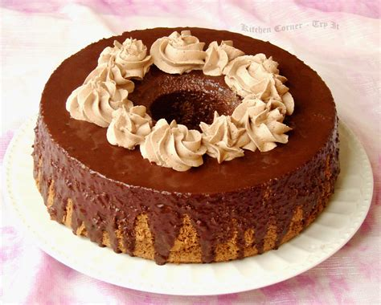
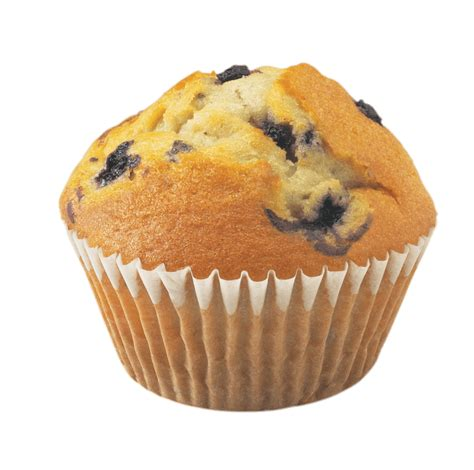

You may ask? Why do I design this website just for sweets.
Mainly it's because I feel like it :)
I just like cakes and this website.(if anyone really cares about it)
Then I might start to have recipies about cake hosted on github and also about other sweets.